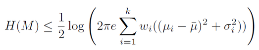
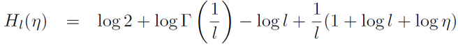
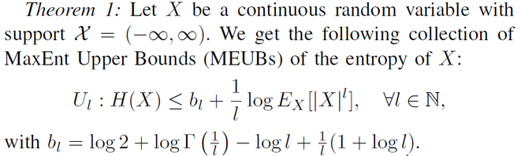
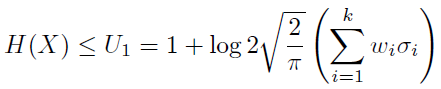
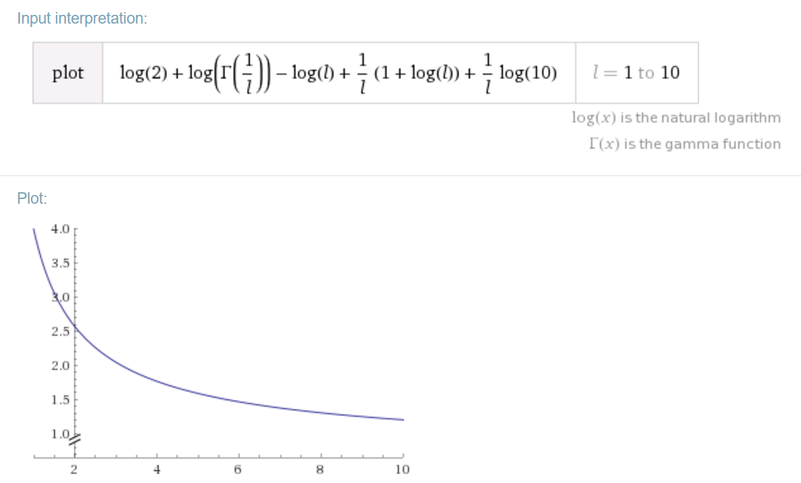

Rationale:
It is well-known that the Gaussian distribution maximizes the entropy among all continuous distributions of prescribed variance.
Since we know the closed-form formula for the entropy of a Gaussian, we thus obtain a MaxEnt Upper Bound (MEUB)
of the entropy of ANY continuous distribution (including mixtures like Gaussian Mixture Models, GMMs):

Similarly, we report the closed-form formula for the Absolute Monomial Exponential Families (AMEFs) with density:

It follows that we get the collection of MaxEnt Upper Bounds (MEUBs):

For l=2, we get the variance bound.
For zero-centered GMM, we have:

plot log(2)+log(gamma(1/l))-log(l)+(1/l)(1+log(l))+(1/l)*log(10), l=1 to 10